Kohärenz und Korrelation
Coherence-and-Correlation
Zusammenfassung
Die Kohärenz misst den Grad der linearen Abhängigkeit von zwei Signalen, indem getestet wird, ob sie ähnliche Frequenzkomponenten enthalten. Wenn zwei Signale bei einer gegebenen Frequenz einander perfekt entsprechen, ist der Betrag der Kohärenz 1. Wenn eine Kohärenz ohne jede Beziehung vorliegt, beträgt sie 0.
Die Korrelation ist eine weitere Maßzahl der Beziehung zwischen zwei Signalen. Ein Korrelationskoeffizient wird verwendet, um Ähnlichkeit zu bewerten. Wenn zwei Signale über ein hohes Maß an Ähnlichkeit verfügen, ist der Betrag des berechneten Korrelationskoeffizienten hoch. Wenn es wenig oder keine lineare Beziehung zwischen zwei Signalen gibt, ist der Betrag des Koeffizienten gering.
Was Sie lernen werden
Dieses Tutorial zeigt Ihnen, wie Sie:
- die Kohärenz prüfen und die Frequenz herausfinden, bei der zwei Signale den höchsten Grad an linearer Abhängigkeit besitzen.
- die Funktion der Korrelation verwenden und die zeitliche Verzögerung ermitteln, um den Datensatz zu übersetzen.
Kohärenz
- Öffnen Sie eine neue Arbeitsmappe.
- Öffnen Sie ein leeres Arbeitsblatt. Wählen Sie Hilfe: Ordner öffnen: Sample-Ordner ... im Menü, um den Ordner "Samples" zu öffnen. Öffnen Sie in diesem Ordner den Unterordner Signal Processing. Dort befindet sich die Datei Coherence.dat. Ziehen Sie diese Datei per Drag&Drop in das leere Arbeitsblatt, um sie zu importieren.
- 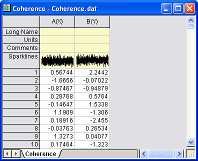
- Markieren Sie Spalte A, klicken Sie mit der rechten Maustaste und wählen Sie im Kontextmenü Setzen als: Als Y setzen. Die Diagrammzuordnung für Spalte A wird aufY gesetzt.
- Markieren Sie zwei Spalten und wählen Sie im Menü Analyse: Signalverarbeitung: Kohärenz. Der Dialog der Kohärenz: cohere wird geöffnet.
- Setzen Sie den Fenstertyp auf Welch und klicken Sie auf OK.
- 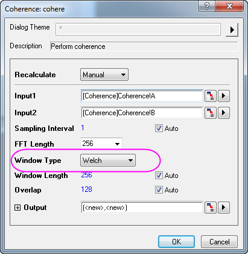
- Zu dem Arbeitsblatt werden zwei Datenspalten hinzugefügt. Markieren Sie diese zwei neuen Spalten und wählen Sie im Menü Zeichnen: Einfache 2D: Liniendiagramm, um eine Zeichnung der Kohärenz gegen die Frequenz zu erstellen.
- 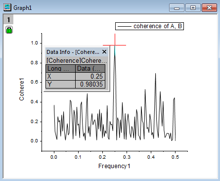
- Aktivieren Sie Datenkoordinaten auf der Symbolleiste Hilfsmittel, um den stärksten Peak im Diagramm abzulesen. Das Bild oben zeigt, dass sich bei einer Frequenz von 0,25 ein spitzer Peak befindet, ein Kennzeichen dafür, dass bei dieser Frequenz eine starke Entsprechung zwischen den beiden Signalen vorliegt.
1D-Korrelation
- Öffnen Sie eine neue Arbeitsmappe.
- Wählen Sie im Menü Datei: Import: Einzelnes ASCII, um die Daten <Origin-Verzeichnis>\Samples\Signal Processing\Correlation.dat zu importieren.
- 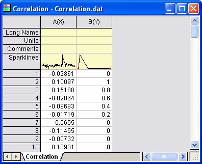
- Markieren Sie Spalte A. Klicken Sie mit der rechten Maustaste, um das Kontextmenü zu öffnen, und wählen Sie dann Setzen als: Als Y setzen, um dieser Spalte Y zuzuweisen.
- Markieren Sie zwei Spalten und wählen Sie im Menü Analyse: Signalverarbeitung: Korrelation. Der Dialog der Korrelation: corr1 wird geöffnet. Übernehmen Sie die Standardeinstellungen.
- 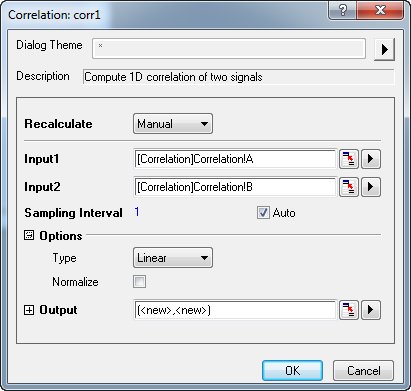
- Klicken Sie auf OK, um die Korrelation für die zwei Signale durchzuführen.
- Die Spalten für das Korrelationsergebnis und die zeitliche Verzögerung werden in dem Arbeitsblatt ausgegeben. Markieren Sie Spalte D und wählen Sie im Menü Zeichnen: Einfache 2D: Liniendiagramm, um eine Zeichnung für das Ergebnis zu erstellen.
- 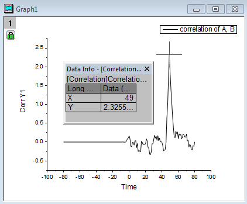
- Die Datenkoordinaten in dem Bild oben zeigen, dass es bei einer Zeit von ungefähr 49 einen starken positiven Peak gibt. Dies bedeutet, dass der zweite Datensatz ca. 49 nach vorn verschoben (übersetzt) werden muss, um diese beiden Signale aufeinander auszurichten.
- Kehren Sie zum Arbeitsblatt zurück, markieren Sie Spalte A und B und wählen Sie dann im Menü Zeichnen: Mehrere Felder/Achsen: 2-fach Vertikal, um die zwei Signale in zwei separate Diagrammlayer zu zeichnen.
- 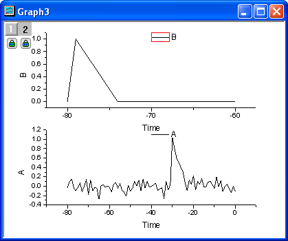
- Klicken Sie zum Öffnen des Dialogs Details Zeichnung doppelt auf die Datenzeichnung. Wählen Sie im linken Bedienfeld Layer 2 (achten Sie darauf, dabei nicht das Kontrollkästchen zu deaktivieren). Wechseln Sie zur Registerkarte Achsenskalierung verknüpfen im rechten Bedienfeld und aktivieren Sie die Option Gerade (1 zu 1) in der Gruppe X-Achsenverknüpfung.
- 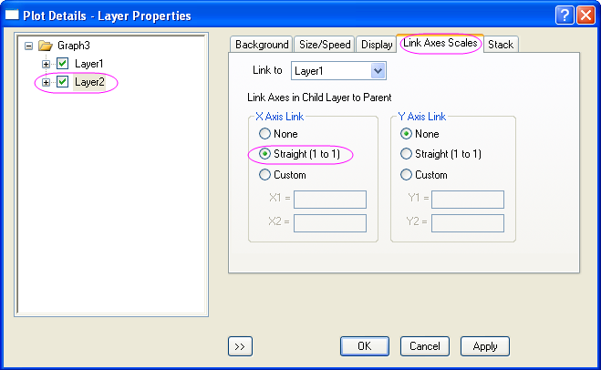
- Klicken Sie auf OK. Beide X-Achsen haben jetzt die gleiche Skalierung.
- 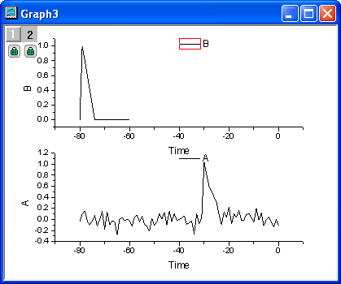
- Um die Datensätze beweglich zu machen, löschen Sie das Schloss, indem Sie darauf klicken und Modus Neu berechnen: Kein auswählen. Klicken Sie auf OK, wenn die Erinnerungsmeldung angezeigt wird.
- Markieren Sie die obere Zeichnung und wählen Sie im Menü Analyse: Datenbearbeitung: Horizontale Translation, um eine vertikale Linie zusammen mit einer dreieckigen Schaltfläche zu dem Layer hinzuzufügen. Klicken Sie auf die dreieckige Schaltfläche, um das Kontextmenü aufzurufen, und deaktivieren Sie Hilfsmittel nach Übersetzung beibehalten. Öffnen Sie das Menü erneut und wählen Sie Duplikation übersetzen in: Neue Spalten. Es werden zwei weitere Spalten hinzugefügt. Die Quelldaten der aktuellen Kurve werden in diese neuen Spalten kopiert.
- 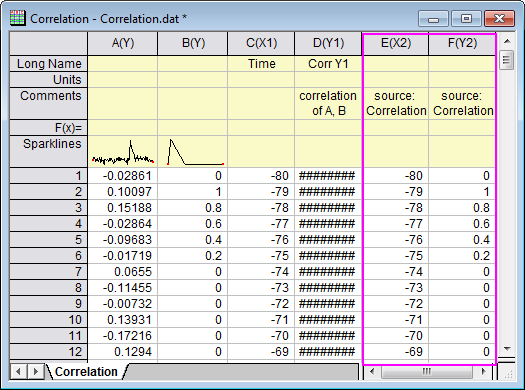
- Rufen Sie erneut das Kontextmenü auf und klicken Sie auf Kurve verschieben. Der Dialog Kurve verschieben wird geöffnet. Setzen Sie den Wert auf 49.
- 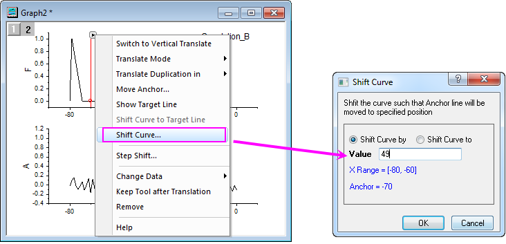
- Klicken Sie auf OK, um die Zeichnung zu übersetzen. Dies sollte die beiden Signale ausrichten.
- 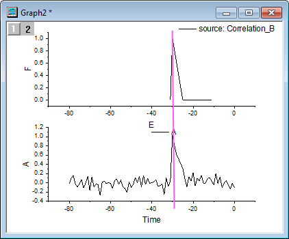